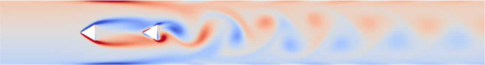
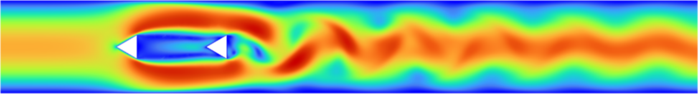
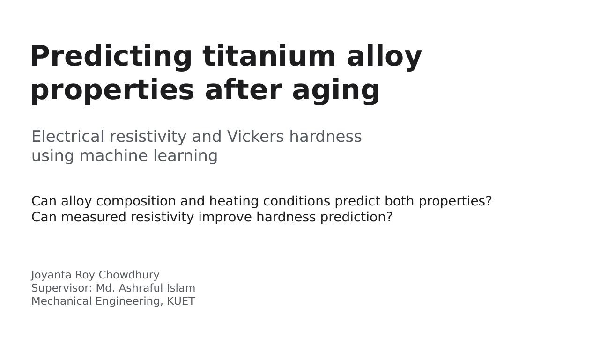
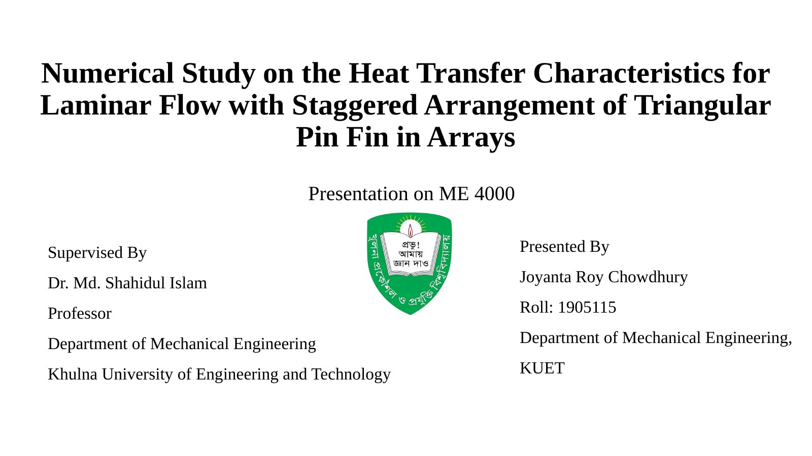

Computational fluid dynamics, convective heat transfer, and machine learning for engineering materials
Wake Interference and Heat Transfer of Heated Tandem Triangular Cylinders: Effects of Apex Angle, Gap Ratio, and Reynolds Number
2026 – Present
Computational Fluid Dynamics · Convective Heat Transfer
Conducting two-dimensional transient CFD simulations of two heated triangular cylinders arranged in tandem inside a channel, using ANSYS Fluent 2023 R1.
Studying the coupled influence of apex angle, cylinder spacing, and Reynolds number on wake behavior, drag, lift, and heat transfer.
Established stable periodic simulations and time-averaging workflows for the upstream and downstream Nusselt numbers and force coefficients, supported by mesh- and time-step-independence studies and comparison with a published single-cylinder benchmark.
Apex angle, β
30°, 60°, 90°
Gap ratio, G/B
1, 3, 5
Reynolds number, Re
80 – 160
Instantaneous temperature field (300–302 K) for β = 60°, G/B = 3, Re = 120.

Instantaneous signed vorticity field (−500 to +500 s⁻¹) showing the vortex street behind the downstream cylinder; β = 60°, G/B = 3, Re = 120.

Instantaneous velocity magnitude (0–0.766 m/s) for the same configuration.
Interpretable Machine Learning of Room-Temperature Electrical Resistivity and Vickers Hardness in Aged Titanium Alloys: A Literature-Derived Dataset and Resistivity-Assisted Hardness Prediction
2026 – Present
Supervisor: Prof. Dr. Md. Ashraful Islam, Department of Mechanical Engineering, KUET
Digitized property data from figures in published studies and curated a literature-derived dataset of 836 room-temperature electrical-resistivity records and 568 Vickers-hardness records for aged titanium alloys.
Trained and evaluated machine-learning models for resistivity and hardness prediction, including resistivity-assisted hardness prediction.
Used SHAP to interpret feature effects.
Pythonpandasscikit-learnXGBoostSHAPData curation

Research presentation · 8 slides
1 / 8
Numerical Study on the Heat Transfer Characteristics for Laminar Flow with Staggered Triangular Pin Fin in Arrays
2024 – 2025
Undergraduate Thesis · Supervisor: Prof. Dr. Md. Shahidul Islam, Department of Mechanical Engineering, KUET
Numerically studied laminar-flow heat-transfer enhancement using triangular pin-fin arrays.
Performed CFD modeling, solution monitoring, post-processing, and comparison of thermal-hydraulic behavior.

Thesis presentation · 26 slides
1 / 26
CFDPin-fin heat sinksHeat-transfer enhancement
Design and Construction of Electricity Generator Shoe Using Kinetic Energy
2023
Undergraduate Engineering Project · Supervisor: Prof. Dr. Zahir Uddin Ahmed, Department of Mechanical Engineering, KUET
Designed and built a shoe-mounted generator that harvests kinetic energy from walking and converts it into electrical energy.